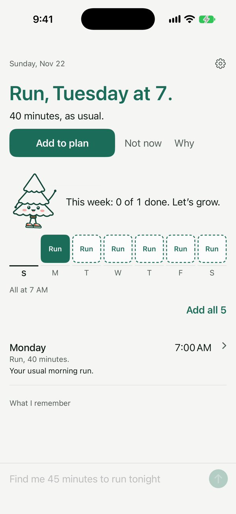
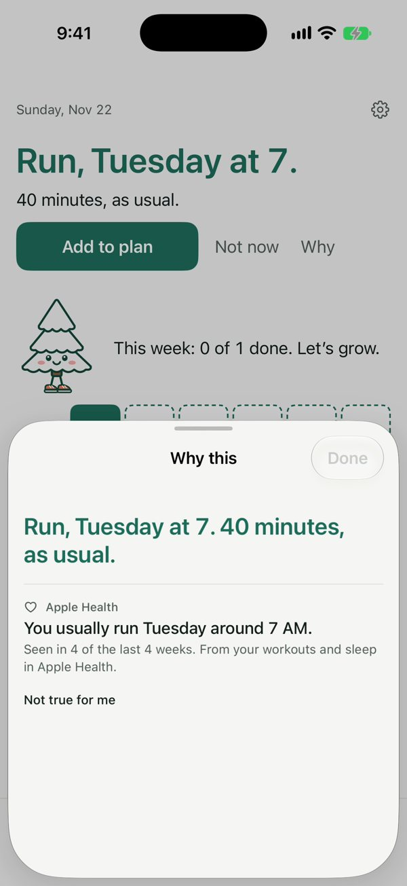

Evergreen
An iPhone workout planner whose memory, planning and calendar agents run on the phone, and code checks every plan before you see it.
Started at the Personal Agents Hackathon in November 2026, where our team placed first in the Amplitude sponsor track. I kept building it on my own afterwards.


The problem
Most workout apps hand you a fixed program. Real weeks have bad sleep, late meetings and missed days. The team wanted an app that plans training around the week a person actually has.
My part on the team
I wrote the memory agent: it turns a health snapshot into short facts, each a number with its time window and never advice, for the recommendation prompt. It was 84 files with 493 tests, merged into the app that won the Amplitude track.
What I built after the hackathon
- Moved memory, recommendation and calendar agents onto the phone, so nothing runs on a server and the user brings their own Gemini key.
- Let the model propose and code decide: every week passes rules for load, rest after poor sleep and the calendar, with one repair round before a rule-built week is used.
- Made destructive memory actions ask first, after "wipe the day" produced a forget-everything card in testing.
- Added earned screen time: workout minutes unlock chosen apps through Apple’s Screen Time APIs.
Results
An evaluation set of sentences the prompts had never seen passed 118 of 120 cases with the real model. Plan time fell from 18–47 seconds to about 7 by tightening prompts and checks instead of switching to a bigger model. 880 engine and contract tests and 244 app tests pass, and five bugs found in independent code reviews were fixed before release.